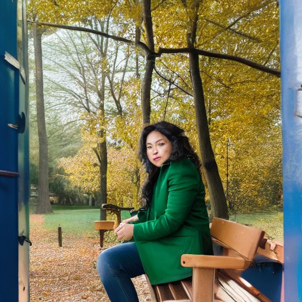
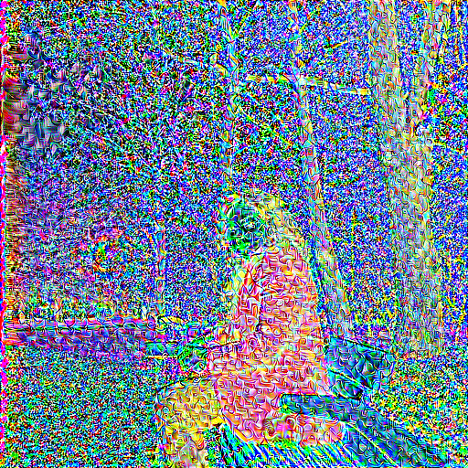

Open source. Runs on your own machine.
What if a fake could give itself away?
AI can rewrite a photo of you in under a minute. BogniGuard hides a faint pattern in the image, so when Stable Diffusion tries, the forgery shows its seams.
View the code on GitHub→To AI, you are not a face.
You are 786,432 numbers. Red, green and blue for each of the 262,144 pixels in a 512 × 512 image. This is the photo as a model receives it, each point lifted by its brightness.

First, it crushes you down.
Stable Diffusion's encoder squeezes those numbers into a small summary called a latent: 4 × 64 × 64, about 48 times smaller. Every edit it makes starts from this summary, not from your pixels.
Then it rewrites the scene.
Ask for "a person standing in a prison cell" and it repaints everything around her. On an unprotected photo the new pixels blend in. Nothing marks where the real image ends.

So we poison what it reads.
BogniGuard nudges every pixel by a tiny amount, chosen by the model's own maths. Largest change: 15 out of 255. Up close you can see a faint texture, but it is far stronger to the model than to you.

The summary drifts to nothing.
Over 200 small steps, the pattern pushes that latent toward the summary of a blank gray image. The photo still looks like you. The model is now reading something else.
Now run the same forgery.
Same photo, same prompt, same random seed. Only the shield is new.

It can't hide the seam.
The model could not read the protected area, so what it painted never joined up with it. This is a real output from the attack test, not an illustration.
It raises the cost. It isn't a guarantee.
- You can see it up close. The pattern shows as a faint, scaly texture, most of all on skin and fabric.
- It targets one family of models. Stable Diffusion 1.x. Other AI editors may not be affected at all.
- The pattern can be removed. Compression, resizing or deliberate cleanup can weaken it.
- This was tested lightly. A clear seam on one sample photo across four prompts, using painted-area protection at Balanced strength.
The code is open. Run it yourself.
BogniGuard runs locally, so your photos never leave your machine. You will need Python and a GPU, or plenty of patience on a CPU. The first run downloads the model, about 2.1 GB.
git clone https://github.com/bharathkumar-496/BogniGuard
cd BogniGuard
uv venv --python 3.12 .venv
uv pip install --python .venv/bin/python -r requirements-app.txt
.venv/bin/python run.py